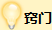
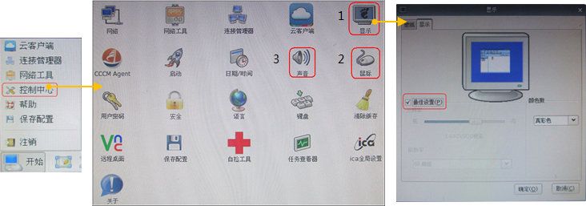

| 首页 > 个性化设置VM桌面 |
| WI帮助 |
| 个性化设置VM桌面 |
|
1. 设置VM分辨率 VM默认沿用TC/PC的分辨率。若要修改VM的显示分辨率，需要在TC/PC上修改分辨率，不能在VM中调整分辨率。 |
||||
|
2. 设置VM鼠标、键盘
|
||||
|
3. 设置VM声音
|
||||
| 
语音通话中，当通话环境嘈杂时会影响通话效果，可在TC上降低麦克风的音量，以减少对方听到的噪音。 当TC上同时开启多个客户端时，可能会影响语音通话效果，建议重启TC后再开启某一个客户端。 |
||||
|  |